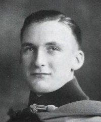

Harold Halvorsen
M, #28001, f. 16 april 1900, d. 19 mars 1971
Foreldre
Biografi
Harold Halvorsen ble født den 16 april 1900 på/i Duluth, St. Louis County, Minnesota, USA. Han døde den 19 mars 1971 på/i St. Louis County, Minnesota, USA. Han ble gravlagt på/i Calvary Cemetery, Duluth, St. Louis County, Minnesota, USA.
Harold Halvorsen was also known as Harold Thomas Halvorson. Han had reference number 9080. Han bodde den 5 april 1950 på/i Ramsey, Ramsey, Minnesota, sammen med
Earl N. Halvorson og
Richard Halvorson.
| Sist redigert |
6 mars 2025 17:27:55 |
| Slektskap | 7-menning 2 ganger forskjøvet til Håkon Wahl |
Roy Edward Halvorson
M, #28002, f. 2 juni 1903, d. 12 juli 1994
Foreldre

Roy E. Halvorson
Biografi
Roy Edward Halvorson ble født den 2 juni 1903 på/i Duluth, St. Louis County, Minnesota, USA. Han giftet seg med
Edythe Henrietta Hanson i 1926. Han døde den 12 juli 1994 på/i Duluth, St. Louis County, Minnesota, USA. Han ble gravlagt på/i Forest Hill Cemetery, Duluth, St. John, Minnesota.
Roy Edward Halvorson had reference number 9081.
Graduated from Culver Military Academy and the Superior State Teachers College.
An important Duluth area businessman. He owned a number of businesses that included:
Halvorson Christmas Trees
Ski-Doo dealerships
Halvair Air Lines
Mesabi Air Lines
Halvorson Equipment Co... and likely more.
Member of the Masonic Order and Shriner charities.
| Sist redigert |
6 mars 2025 17:27:55 |
| Slektskap | 7-menning 2 ganger forskjøvet til Håkon Wahl |
Mae Martin
K, #28003, f. før 1884
Biografi
Mae Martin was also known as Mae Geisnes. Hun had reference number 9082.
| Sist redigert |
17 februar 2014 00:00:00 |
Evelyn A Geisnes
K, #28004, f. 4 januar 1904, d. 15 oktober 1974
Foreldre
Biografi
Evelyn A Geisnes ble født den 4 januar 1904 på/i Port Angeles, Washington, USA. Hun døde den 15 oktober 1974. Hun ble gravlagt på/i Willamette National Cemetery, Portland, Multnomah County, Oregon, USA.
Evelyn A Geisnes was also known as Evelyn A. Geisness Van Etten. Hun had reference number 9083. Hun var utdannet på/i University of Washington, USA.
| Sist redigert |
3 mars 2025 16:25:05 |
| Slektskap | 7-menning 2 ganger forskjøvet til Håkon Wahl |
John T Geisnes
M, #28005, f. 21 september 1907, d. 12 mars 1956
Foreldre
| Sønn | Thomas Moulton Geisnes (f. omtrent 1939) |
| Datter | Ann Moulton Geisnes (f. omtrent 1946) |
Biografi
John T Geisnes ble født den 21 september 1907 på/i Port Angeles, Washington, USA. Han giftet seg med
Helen R. Moulton den 30 juni 1933 på/i King County, Washington, USA. Han døde den 12 mars 1956 på/i Seattle, King County, Washington, USA.
John T Geisnes had reference number 9084. Han var utdannet på/i University of Washington, USA.
| Sist redigert |
7 mars 2025 17:58:31 |
| Slektskap | 7-menning 2 ganger forskjøvet til Håkon Wahl |
Katherine Ann Geisnes
K, #28006, f. 1 mars 1910, d. 22 mai 1931
Foreldre
| Datter | Katherin Daugerfield (f. 15 juli 1929) |
Biografi
Katherine Ann Geisnes ble født den 1 mars 1910 på/i Port Angeles, Washington, USA. Hun giftet seg med
Wm Daugerfield den 29 mars 1927 på/i USA. Hun døde den 22 mai 1931 på/i USA.
Katherine Ann Geisnes had reference number 9085.
| Sist redigert |
17 februar 2014 00:00:00 |
| Slektskap | 7-menning 2 ganger forskjøvet til Håkon Wahl |
Wm Daugerfield
M, #28007, f. før 1907
| Datter | Katherin Daugerfield (f. 15 juli 1929) |
Biografi
Wm Daugerfield had reference number 9086.
| Sist redigert |
17 februar 2014 00:00:00 |
Robert Geisnes
M, #28009, f. 13 april 1913
Foreldre
Biografi
Robert Geisnes ble født den 13 april 1913 på/i Port Angeles, Washington, USA.
Robert Geisnes had reference number 9088. Han var utdannet på/i University of Washington, USA.
| Sist redigert |
26 september 2022 16:19:56 |
| Slektskap | 7-menning 2 ganger forskjøvet til Håkon Wahl |
Louis O Wahl
M, #28010, f. 16 april 1867, d. 1 januar 1948
Biografi
Louis O Wahl ble født den 16 april 1867 på/i Ådal, Ringerike, Buskerud. Han giftet seg med
Aleksandra Amanda Geisnes den 8 mai 1892 på/i USA. Han døde den 1 januar 1948 på/i Baldwin, St. Croix County, Wisconsin, USA. Han ble gravlagt på/i Woodside Cemetery, Baldwin, St. Croix County, Wisconsin, USA.
Louis O Wahl was also known as Lewis O. Wahl. Han had reference number 9089. Han bodde på/i Rush River, St. Croix County, Wisconsin, USA. Han drev møbelforretning og begravelsesbyrå Woodville, St. Croix County, Wisconsin, USA.
| Sist redigert |
29 august 2025 10:37:25 |
Edvard Jensen Strandhaug
M, #28011, f. 25 september 1827, d. 9 februar 1870
Foreldre
Biografi
Edvard Jensen Strandhaug ble født den 25 september 1827 på/i Nærøy, Nord-Trøndelag. Han giftet seg med
Martha Johannesdatter Geisnes den 29 juni 1859. Han døde den 9 februar 1870 på/i Strandhaugen 20/4, Strand; Kolvereid, Nærøy, Nord-Trøndelag. Han ble gravlagt den 18 februar 1870 på/i Kolvereid kirkegård, Nærøy, Nord-Trøndelag.
Edvard Jensen Strandhaug had reference number 9092. Han ble født den 2 oktober 1827. Han kjøpte den 6 juli 1857 Strandhaugen 20/4, Strand; Kolvereid, Nærøy, Nord-Trøndelag.
| Sist redigert |
30 juni 2017 00:00:00 |
Karen Bergitte Edvardsdatter Strandhaug
K, #28012, f. 18 september 1859, d. 21 januar 1930
Foreldre
Biografi
Karen Bergitte Edvardsdatter Strandhaug ble født den 18 september 1859 på/i Strandhaugen 20/4, Strand; Kolvereid, Nærøy, Nord-Trøndelag. Hun giftet seg med
Anthon Edvard Eliassen Laugen. Hun døde den 21 januar 1930 på/i Eau Claire County, Wisconsin, USA.
Karen Bergitte Edvardsdatter Strandhaug was also known as Karen Bergitte Edvardsdatter Laugen. The bygdebok gives her birth month as October, the Cemetery record and tombstone give September. Hun had reference number 9094. Hun emigrerte til Wisconsin, USA, den 9 juli 1882.
| Sist redigert |
15 juni 2025 21:44:12 |
| Slektskap | 6-menning 3 ganger forskjøvet til Håkon Wahl |
Julianne Edvardsdatter Strandhaug
K, #28013, f. 4 mai 1862, d. 14 september 1940
Foreldre
Biografi
Julianne Edvardsdatter Strandhaug ble født den 4 mai 1862 på/i Strandhaugen 20/4, Strand; Kolvereid, Nærøy, Nord-Trøndelag. Hun giftet seg med
Karl Bertram Hansen den 19 januar 1885. Hun døde den 14 september 1940. Hun ble gravlagt den 21 september 1940 på/i Berkåk kirkegård, Rennebu, Sør-Trøndelag.
Julianne Edvardsdatter Strandhaug had reference number 9095.
| Sist redigert |
17 februar 2014 00:00:00 |
| Slektskap | 6-menning 3 ganger forskjøvet til Håkon Wahl |
Johan Jørgen Edvardsen Strandhaug
M, #28014, f. 18 september 1864, d. 31 mai 1896
Foreldre
Biografi
Johan Jørgen Edvardsen Strandhaug ble født den 18 september 1864 på/i Strandhaugen 20/4, Strand; Kolvereid, Nærøy, Nord-Trøndelag. Han døde den 31 mai 1896 på/i Trondheim, Sør-Trøndelag.
Johan Jørgen Edvardsen Strandhaug had reference number 9096.
| Sist redigert |
20 april 2026 16:05:13 |
| Slektskap | 6-menning 3 ganger forskjøvet til Håkon Wahl |
Martin Edvard Strandhaug
M, #28015, f. 26 juni 1867, d. 27 april 1945
Foreldre
Biografi
Martin Edvard Strandhaug ble født den 26 juni 1867 på/i Strandhaugen 20/4, Strand; Kolvereid, Nærøy, Nord-Trøndelag. Han giftet seg med
Petra Eline Pedersdatter Gundersen den 22 desember 1898 på/i USA. Han døde den 27 april 1945 på/i Eau Galle, St. Croix County, Wisconsin, USA.
Martin Edvard Strandhaug was also known as Martin Edvard Johnsen. Han had reference number 9097. Han emigrerte fra Pleasant Valley, Eau Claire County, Wisconsin, USA, til Pleasant Valley, Eau Claire County, Wisconsin, USA, i 1886. Mr Johnsen må ha vært en dyktig og energisk mann, han hadde på forholdsvis kort tid samlet inn mesteparten av opplysningene til boka Namdals-slekter om de 2 grener av Berreslekten som utvandret fra Kolvereid. Han kjøpte en farm Woodville, St. Croix County, Wisconsin, USA.
| Sist redigert |
15 juni 2025 21:44:12 |
| Slektskap | 6-menning 3 ganger forskjøvet til Håkon Wahl |
Brede Julius Edvardsen Strandhaug
M, #28016, f. 3 september 1869, d. 21 februar 1930
Foreldre
Familie: Anna Hansen (f. 11 august 1879, d. 2 august 1957)
Biografi
Brede Julius Edvardsen Strandhaug ble født den 3 september 1869 på/i Strandhaugen 20/4, Strand; Kolvereid, Nærøy, Nord-Trøndelag. Han giftet seg med
Anna Hansen i 1902 på/i St. Croix County, Wisconsin, USA. Han døde den 21 februar 1930 på/i Woodville, St. Croix County, Wisconsin, USA. Han ble gravlagt på/i Woodside Lutheran Cemetery, Rush River, St. Croix County, Wisconsin, USA.
Brede Julius Edvardsen Strandhaug had reference number 9098. Han immigrerte til St. Croix County, Wisconsin, USA, i 1890.
| Sist redigert |
5 april 2025 00:29:50 |
| Slektskap | 6-menning 3 ganger forskjøvet til Håkon Wahl |
Ella Mathilde Logan
K, #28017, f. 13 november 1886, d. 14 april 1971
Foreldre
Biografi
Ella Mathilde Logan ble født den 13 november 1886 på/i Martell, Wisconsin, USA. Hun giftet seg med
Otis Carl Anderson den 12 oktober 1905 på/i Woodville, St. Croix County, Wisconsin, USA. Hun døde den 14 april 1971 på/i Menomonie, Dunn, Wisconsin, USA. Hun ble gravlagt den 17 april 1971 på/i St. Johns Lutheran Cemetery, Spring Valley, Pierce County, Wisconsin, USA.
Ella Mathilde Logan var Lutherian. Hun had reference number 9100. Hun ble født den 13 november 1886 på/i Baldwin, St. Croix County, Wisconsin, USA.
| Sist redigert |
22 april 2025 00:17:17 |
| Slektskap | 7-menning 2 ganger forskjøvet til Håkon Wahl |
Kjell Arther Logan
M, #28018, f. 12 juli 1888
Foreldre
Biografi
Kjell Arther Logan ble født den 12 juli 1888 på/i Martell, St. Croix County, Wisconsin, USA. Han ble gravlagt på/i Superior, Wisconsin, USA.
Kjell Arther Logan had reference number 9101.
| Sist redigert |
5 april 2025 00:29:50 |
| Slektskap | 7-menning 2 ganger forskjøvet til Håkon Wahl |
Florence Isabella Logan
K, #28019, f. 12 juni 1890
Foreldre
Biografi
Florence Isabella Logan ble født den 12 juni 1890 på/i Martell, St. Croix County, Wisconsin, USA. Hun giftet seg med
Ralph Turner i 1910 på/i USA. Hun ble gravlagt på/i Woodside Lutheran Cemetery, Rush River, St. Croix County, Wisconsin, USA.
Florence Isabella Logan had reference number 9102.
| Sist redigert |
5 april 2025 00:29:50 |
| Slektskap | 7-menning 2 ganger forskjøvet til Håkon Wahl |
Otis Carl Anderson
M, #28020, f. 15 juli 1885, d. 29 august 1965
Foreldre
Biografi
Otis Carl Anderson ble født den 15 juli 1885 på/i Cady, St. Croix County, Wisconsin, USA. Han giftet seg med
Ella Mathilde Logan den 12 oktober 1905 på/i Woodville, St. Croix County, Wisconsin, USA. Han døde den 29 august 1965 på/i Spring Valley, Pierce County, Wisconsin, USA. Han ble gravlagt på/i St. Johns Lutheran Cemetery, Spring Valley, Pierce County, Wisconsin, USA.
Otis Carl Anderson var Lutheran. Han had reference number 9103.
| Sist redigert |
22 april 2025 00:17:17 |
Bertha Marie Anderson
K, #28021, f. 24 november 1906, d. 16 desember 1966
Foreldre
Familie: Elmer Orin Lynum (f. 29 desember 1902, d. 3 april 1969)
| Datter | Bernice Elaine Lynum+ (f. 24 mars 1926) |
| Datter | Delores Lucille Lynum+ (f. 1 desember 1927) |
| Sønn | John Otis Lynum+ (f. 17 februar 1929) |
| Sønn | Palmer Eldon Lynum+ (f. 12 februar 1931) |
| Sønn | Robert Duane Lynum+ (f. 22 oktober 1932) |
| Datter | Loretta Jean Lynum+ (f. 10 juni 1935) |
| Sønn | Wayne Eugene Lynum+ (f. 8 februar 1937) |
| Datter | Wanda Jane Lynum+ (f. 8 februar 1937) |
| Sønn | Gail Roger Lynum+ (f. 26 september 1942) |
| Sønn | Larry Lee Lynum+ (f. 18 desember 1949) |
| Sønn | Steven Michael Lynum+ (f. 7 august 1951) |
Biografi
Bertha Marie Anderson ble født den 24 november 1906 på/i Cady, St. Croix County, Wisconsin, USA. Hun giftet seg med
Elmer Orin Lynum den 19 januar 1926 på/i St. Paul, Ramsey County, Minnesota, USA. Hun døde den 16 desember 1966. Hun ble gravlagt den 20 desember 1966 på/i Woodside Lutheran Cemetery, Rush River, St. Croix County, Wisconsin, USA.
Bertha Marie Anderson had reference number 9104. Bertha Marie Anderson var Lutherian. Hun ble døpt den 25 desember 1906 på/i St Johns Lutheran Church, Spring Valley, Pierce County, Wisconsin, USA.
| Sist redigert |
22 april 2025 00:17:17 |
| Slektskap | 8-menning 1 gang forskjøvet til Håkon Wahl |
Signa Henriette Anderson
K, #28022, f. 6 juli 1908
Foreldre
Familie: Melvin Selmer Place (f. 30 januar 1894, d. 24 november 1971)
| Datter | Maxine Ellen Place+ (f. 17 mars 1928) |
| Sønn | Merlin Dale Place+ (f. 30 november 1930) |
| Datter | Shirley Ann Place+ (f. 10 november 1936) |
| Datter | Shelby Jean Place+ (f. 10 februar 1938) |
| Sønn | Michael David Place+ (f. 7 november 1947) |
Biografi
Signa Henriette Anderson ble født den 6 juli 1908 på/i Cady, St. Croix County, Wisconsin, USA. Hun giftet seg med
Melvin Selmer Place den 9 august 1927 på/i USA.
Signa Henriette Anderson var Lutheran. Hun had reference number 9105. Hun ble født den 8 juli 1908 på/i USA.
| Sist redigert |
5 april 2025 00:29:50 |
| Slektskap | 8-menning 1 gang forskjøvet til Håkon Wahl |
Odelia Evelyn Anderson
K, #28023, f. 20 juli 1910
Foreldre
| Sønn | Laroy Walter Hinzman+ (f. 4 september 1932) |
| Sønn | Theodore Orin Hinzman+ (f. 27 desember 1936) |
| Sønn | Kent Thorwald Hinzman (f. 13 juni 1941, d. 1976) |
| Sønn | Donald Luther Hinzman+ (f. 24 mai 1946) |
| Sønn | Douglas John Hinzman+ (f. 11 desember 1947) |
| Sønn | Billie Otis Hinzman+ (f. 7 mars 1949) |
Biografi
Odelia Evelyn Anderson ble født den 20 juli 1910 på/i Cady, St. Croix County, Wisconsin, USA. Hun giftet seg med
Walter Adolph Theodore Hinzman den 31 oktober 1931 på/i Hatchville, Wisconsin, USA.
Odelia Evelyn Anderson var Lutheran. Hun had reference number 9106.
| Sist redigert |
5 april 2025 00:29:50 |
| Slektskap | 8-menning 1 gang forskjøvet til Håkon Wahl |
Dottie Drucella Anderson
K, #28024, f. 26 august 1914
Foreldre
| Datter | Marian Osterude+ (f. 25 september 1940) |
| Sønn | Louis Olaf Osterude, Jr+ (f. 5 juni 1944) |
| Datter | Margie Osterude+ (f. 7 november 1947) |
| Datter | Jeanine Osterude (f. 2 september 1952) |
| Datter | Marilyn Osterude (f. 8 mai 1954) |
Biografi
Dottie Drucella Anderson ble født den 26 august 1914 på/i Cady, St. Croix County, Wisconsin, USA. Hun giftet seg med
Clifford Lentz den 5 februar 1932.
Clifford Lentz og hun ble skilt i 1939. Hun giftet seg med
Louis Olaf Osterude den 1 mai 1940 på/i Decorah, Winneshiek, Iowa, USA.
Dottie Drucella Anderson var Lutheran. Hun had reference number 9107.
| Sist redigert |
5 april 2025 00:29:50 |
| Slektskap | 8-menning 1 gang forskjøvet til Håkon Wahl |
Katryn Marjorie Anderson
K, #28025, f. 10 august 1916
Foreldre
Familie: Jacob Geisert, Jr. (f. 3 september 1899, d. 3 august 1967)
| Datter | Patsy Carol Geisert+ |
| Sønn | George Gerald Geisert+ (f. 28 februar 1941) |
| Datter | Geraldine Ann Geisert+ (f. 17 november 1942) |
Biografi
Katryn Marjorie Anderson ble født den 10 august 1916 på/i Cady, St. Croix County, Wisconsin, USA. Hun giftet seg med
Jacob Geisert, Jr., den 28 juli 1938 på/i Decorah, Winneshiek, Iowa, USA.
Jacob Geisert, Jr., og hun ble skilt før 1963. Hun giftet seg med
Edward Orlo Wold den 2 september 1963 på/i Chetek, Barron County, Wisconsin, USA.
Katryn Marjorie Anderson var Lutheran. Hun had reference number 9108.
| Sist redigert |
5 april 2025 00:29:50 |
| Slektskap | 8-menning 1 gang forskjøvet til Håkon Wahl |
{kind=link}